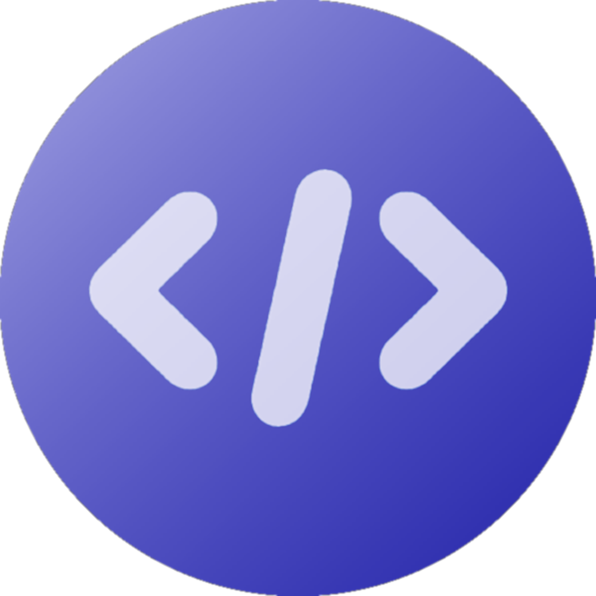
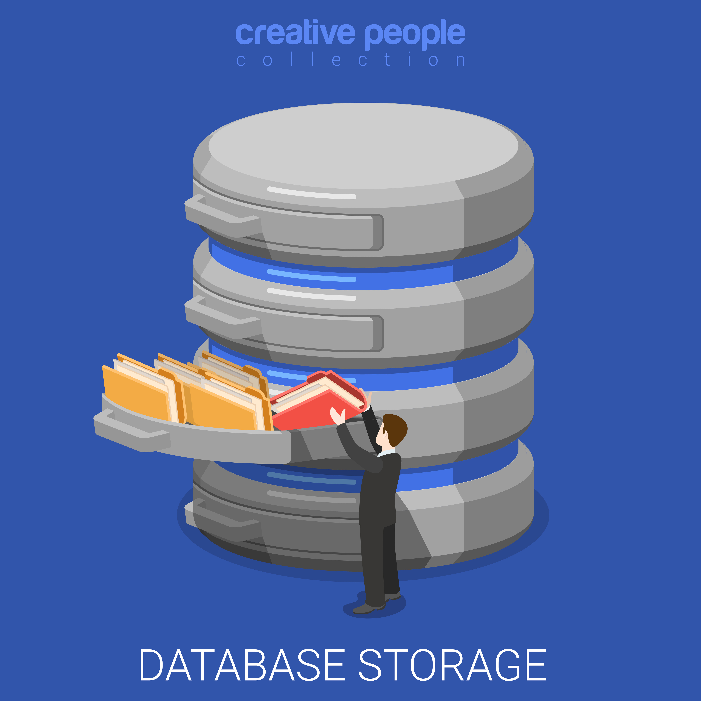

As a first year IT Programming Student, I understand the significance of having a solid foundation in the subjects you will be studying,
particularly in programming and web development. I dedicated a year to learning Python and a bit about Web Development,
and it has made a significant impact on my life! I highly recommend checking out the
100 Days of Code Python Pro Bootcamp course.
Although programming can be challenging, don't give up! Wishing you all the best!
Jordan Kelsey
Why These Courses
Logic and Programming
Logic and problem-solving are two of the most vital and fundamental skills needed in order to become an IT professional. Programmers use logic to take large problems and break them down into smaller parts before writing any code. Once a plan is created, programmers then translate that plan into code and write programs that are both efficient and effective in solving the problem. For these reasons, it is extremly important for any programmer to develop an understanding of both logic and the basic fundamentals of writing programs.

Web Devlopement
Most websites in the world, including this one, are created using special programming languages called
markup languages, such as HTML5 and XML. These markup languages are used to write various tags
and elements containing the content of webpages, which are often formatted afterwards using a Cascading Style
Sheet (CSS). In a world of E-commerce and online content creation, it is essential for anyone in the IT industry
to be comfortable working with and creating websites and web-based applications.

Data Base
As a developer, having knowledge of databases is crucial for your career growth.
It is a fundamental skill that will open new job opportunities and enable you to work on a wide range
of projects. Being knowledgeable about databases will help you to design, develop,
and maintain efficient and scalable applications that meet the needs of your clients or users.
Therefore, it is essential to invest time and effort in learning about databases and their various types,
structures, and functionalities.
Image by sentavio
Windows Administration
Having knowledge of Windows administration is important for understanding how your
program will interact with Windows operating systems. It also provides you with fundamental
knowledge about Windows that will help you troubleshoot errors throughout your career.
Image by studiogstock

Networking
Debugging network-related issues is a crucial skill for any programmer.
It is essential to have a fundamental understanding of networking to identify and resolve problems.
Failure to do so can lead to issues down the road, which can negatively impact consumers
and other stakeholders. Therefore, it is important to be well-versed in network debugging to
ensure the smooth and efficient functioning of your program.
Image by macrovector